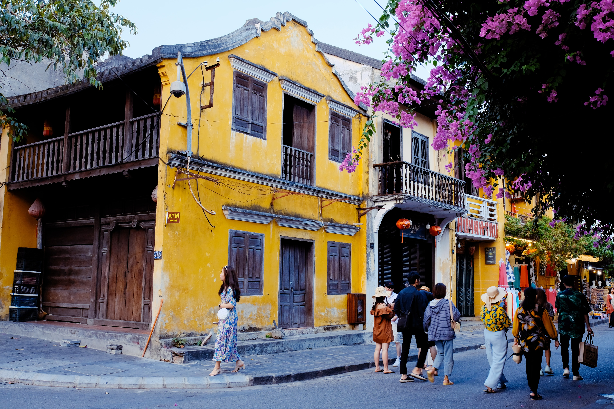
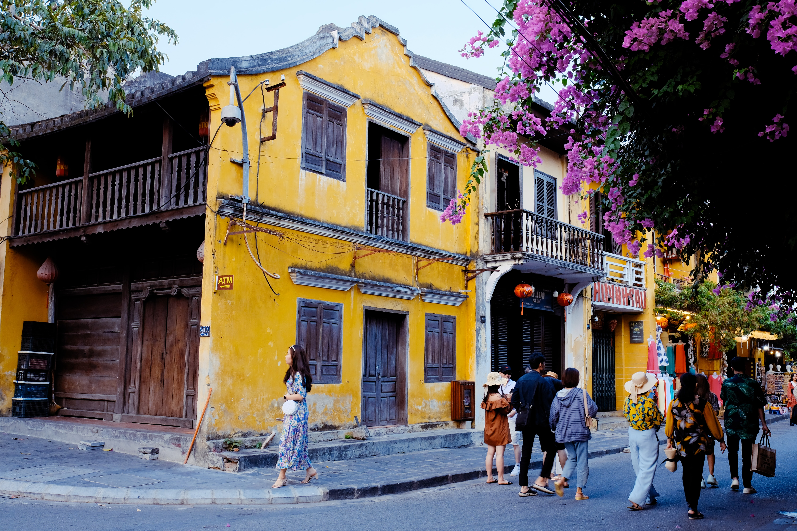
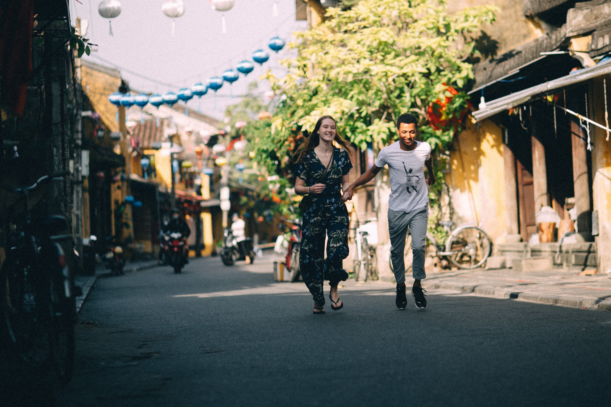

1. Wander down the old streets of Hoi An
Spend hours, wandering slowly through the streets and admiring the French & Asian style houses, shutters, and colors. The architecture provides a real nostalgic feeling and has been perfectly maintained, as a result of its UNESCO status.
 

Stop off at charming coffee shops, some of which have terraces that provide views over the archaic roofs and the river.
During the night, lantern-lit streets give a charming and romantic feel.
Find all hotels to stay in the city
2. Japanese Bridge
The iconic sight of Hoi An is the majestic Japanese Bridge, that sits over the river. This bridge, built in the late 16th century at the time of Japanese immigration, is one of the most popular things to do in Hoi An, Vietnam.
In order to cross the ancient bridge, you will need to have the Hoi An old town ticket. Read about it here.
Join one of the popular Hoi An Walking Tours
3. Hoi An Market
Engage in the hectic local life and visit the Hoi An Market (Chợ Hội An). You can find products like fresh vegetables and fruits, flowers, spices, baskets, and meat and fish. Experiencing the intense crowds, and beeping motorbikes, during the morning is a thing you must do in Hoi An.

Additionally, visit one of the many tailor shops at the nearby located Hoi An Tailor market and have a high-quality suit, or dress, custom made for a very reasonable price if you're comfortable with bargaining.
The tour is organized every Tuesday, Saturday, and Sunday and can be booked here.
4. Banh Mi - Taste the best ones in Hoi An!
The French colonial influences have left their mark in Vietnam, through the introduction of the baguette. The Banh Mi sandwich filled with meats, coriander, cucumber, pathé or cheese, chili, and mayonnaise is now a traditional Vietnamese dish.